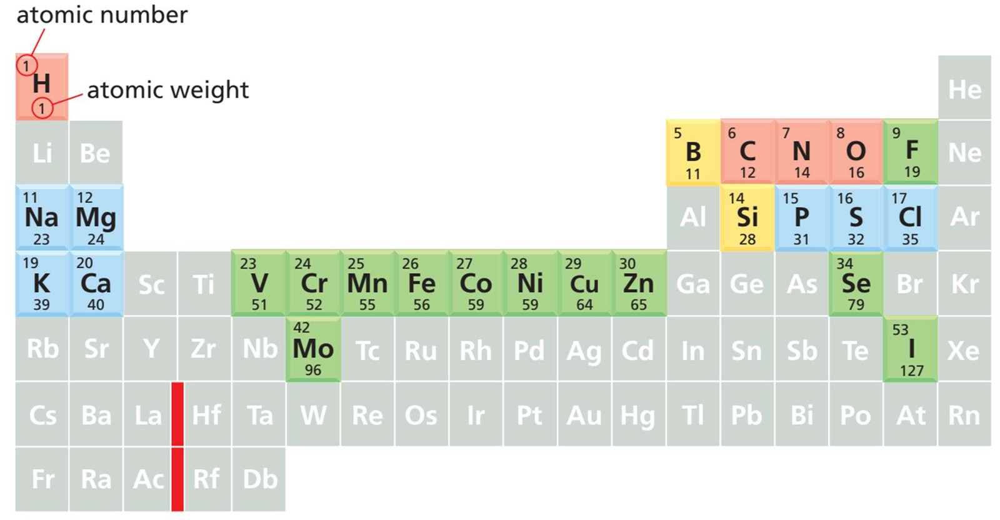
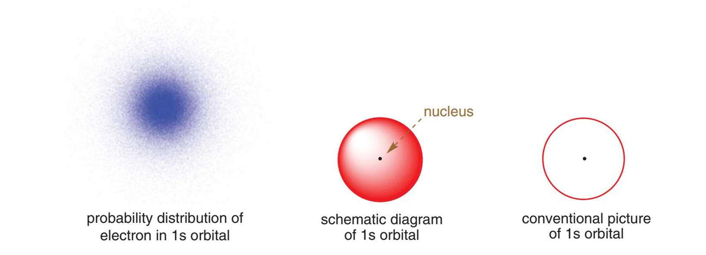

BIO105 · 第 1 章
从原子到生命：原子结构与离子通道
From Atom to Life: Atomic Structure & Ion Channels
虚线下划线为术语；悬停查看中文、英文与释义，完整词典见“术语”。
本章目录
本讲建立全课程的化学基础：从原子结构、元素组成与化学键出发，解释离子如何在生物体内承担电信号，并以电压门控钠通道与钾通道的结构研究作为收束。
本章要点
- 本模块的三条学习主线：化学结构如何决定生物功能、化学能的获取与利用、生理学与药理学的化学基础。
- 人体元素组成高度集中：四种主要元素约占 99%，另有七种元素合计约 0.9%；多种必需元素以离子形式存在。
- 原子由质子、中子、电子组成；质量数 = 质子数 + 中子数，原子序数 = 质子数。
- 电子占据原子轨道，轨道由量子数 n、l、ml 标记；|ψ|² 给出电子出现的概率密度。
- 电离能决定元素失去电子的难易；NaCl 由 Na⁺ 与 Cl⁻ 的静电吸引构成，没有轨道重叠。
- 大脑与计算机都以电活动处理信息，但计算机用电子流，大脑用 Na⁺、K⁺、Ca²⁺ 的离子流。
- 单个电压门控离子通道的开放是全或无的；宏观电流是许多通道开放概率的加和。
- K⁺ 通道为四聚体，孔道中的 K⁺ 经选择过滤器脱水后被识别，选择性可比 Na⁺ 高 10,000 倍。
1.1 课程定位：生命中的化学原理
本模块的目标是在生物科学的广泛范围内学习化学原理，对象从单细胞生物一直延伸到人体生理与医学。授课对象为生物科学、生物信息学与生物医学三个专业的本科生。课程给出三条学习结果：(A) 解释化学结构与功能如何贡献于生物过程以及疾病的发生；(B) 定义并描述生物体获取、储存与使用化学能以维持生命的机制；(C) 对生理学、药理学与药代动力学中的化学原理获得入门性理解。
课程共 13 讲，依次为：从原子到生命、生命起源与水的化学、生物分子化学、化学动力学与热力学、生物系统中的化学能学、光合作用的化学、生理系统的化学、呼吸与循环的化学、神经系统的化学、药理学基础、药代动力学导论、当前议题与复习。考核由三次课程作业与期末考试构成：CW1 占 10%，CW2 占 15%，CW3 占 15%，期末占 60%。
讲义用脑机接口（脑机接口brain machine interface, BMI）作为引入。其核心观察是：计算机与人脑都以电活动工作，因此两者之间可以共享电信息，记录到的场电位field potential就是这种共享的物理基础。但相似性到此为止——计算机内部是晶体管中的电子流，而大脑使用的是离子流（Na⁺、K⁺、Ca²⁺）。这一差别正是本讲要展开的化学问题：离子从何而来，又如何在膜上形成电流。
L1 p.3–17
1.2 元素组成与周期表
周期表把元素按原子序数排列。讲义给出的元素清单从氢（H, 1）开始，经碳、氮、氧、钠、镁、磷、硫、氯、钾、钙，一直到锌（Zn, 30）等。生物体并不均匀地使用全部元素，而是高度集中地使用少数几种。
讲义图中的统计是：以红色标出的四种元素合计约占人体的 99%，以蓝色标出的七种元素合计约占 0.9%，其余为痕量。以黄色标出的元素则标注为“是否必需仍然未知”，说明“必需元素”的清单本身仍在修订。另有一类必需微量金属essential trace metal，讲义列出钒、铬、锰、铁、钴、镍、铜、锌共八种。
周期表的分区对理解离子行为有用。第 1 族为碱金属（alkali metals），第 2 族为碱土金属（alkali earth metals），第 17 族为卤素（halogens）。稀土元素则由钪、钇与镧系共同组成，共 17 种。
关键的一点是：许多生物学上重要的元素在人体中以离子形式存在。讲义直接给出的例子就是大脑使用 Na⁺、K⁺、Ca²⁺ 的离子电流。这意味着后面讨论的“元素”不能只当作中性原子，必须当作带电荷的粒子来处理。

L1 p.19–20, p.29, p.31
1.3 原子结构：质子、中子与电子
原子由三种基本粒子组成：质子proton、中子neutron与电子electron。质子与中子集中在原子核内，电子在核外空间运动。三个量之间的关系是本章最基本的计算规则：
讲义以 23Na 为例：质量数为 23，原子序数为 11，因此质子 11 个、中子 23 − 11 = 12 个。写核素符号时左上角写质量数、左下角写原子序数，这一写法在后续讨论同位素与放射性标记时会反复出现。
同位素isotope是质子数相同、中子数不同的原子。讲义区分了两类情形：天然存在的稳定同位素往往是混合物（mixture），而只有一种天然同位素的元素被称为 monotopic。这一区分解释了为什么周期表上的原子量常带小数——它是天然同位素丰度的加权结果，而不是某个单原子的质量。
原子尺度需要一个专门的单位。讲义给出的换算是 1 Å = 100 pm = 0.1 nm，即 10−10 m。这个单位在后面描述离子通道孔径、蛋白结构分辨率与原子间距时会不断用到。
L1 p.21–22, p.38
1.4 电子排布与原子轨道
电子并不是沿固定轨道绕核旋转的粒子。海森堡不确定性原理Heisenberg's uncertainty principle指出，电子的位置不可能被精确确定；我们只能谈论它在某处出现的概率。这种概率描述就是原子轨道atomic orbital。每个原子轨道由三个量子数唯一标记：主量子数 n、角量子数 l 与磁量子数 ml。
历史上先用的是玻尔模型（Bohr's model），把电子放在 K 壳层、L 壳层这样的同心壳层上。玻尔模型能解释一些现象，但无法说明轨道的三维形状，因此被概率描述取代。讲义同时指出，价键理论（valence bond theory）同样无法解释三维原子结构，这正是后面引入杂化与分子轨道理论的原因。
轨道的形状由波函数wavefunction描述，而 |ψ|² 给出电子出现的概率密度probability density。把概率密度对距离积分，就得到径向分布函数。1s、2s、3s 轨道的径向分布是球对称的，含有若干节点node——节点处密度为零。2p 轨道（2px、2py、2pz）则呈哑铃形（dumbbell shape），三个方向彼此垂直。
填充轨道时遵循洪特规则Hund's rule：在同一能级的一组轨道上，电子优先以自旋平行的方式单独占据，使未成对电子数最多。讲义按 B、C、N、O、F、Ne 的顺序展示了 2p 电子的逐个填充过程，从硼的 1 个未成对电子，到氖的 2p 全满。

Clean vector scientific diagram with two panels: left panel plots probability density against distance r from the nucleus for 1s, 2s and 3s orbitals, marking nodes where density falls to zero; right panel shows 2p x, 2p y and 2p z orbitals as three mutually perpendicular dumbbell shapes with a shared node at the nucleus. Flat 2D line plots and outlines, thin 1.5 px strokes, muted slate blue and warm grey palette, white background, English labels, no cartoon, no gradient, no shadow.
L1 p.23–28
1.5 电离能、电负性与离子键
第一电离能first ionization energy是把一个气态原子最外层的一个电子移走所需的能量。电离能越小，原子越容易变成阳离子。讲义的曲线显示，碱金属（Li、Na、K）位于低谷，而稀有气体位于峰值，氟、氧、氮、碳依次升高。这一周期性直接决定了哪些元素在生物体内以阳离子形式存在——Na⁺、K⁺、Ca²⁺ 都来自电离能较低的区域。
离子由电子得失形成。电负性electronegativity衡量原子在化学键中吸引电子的能力。讲义以钠（电负性 0.93）与氯（电负性 3.16）为例：两者差别极大，钠倾向于失去 3s 电子成为 Na⁺，氯倾向于得到电子成为 Cl⁻。需要考虑的原子轨道是 Na 的 3s、3p 与 Cl 的 3s、3p。
由此形成的 离子键ionic bond有一个容易被忽略的特征：NaCl 由 Na⁺ 与 Cl⁻ 通过静电吸引结合在一起，没有轨道重叠。这与共价键形成鲜明对照——共价键的本质是原子轨道的重叠与电子共享，而离子键只是两个带电球体之间的库仑作用。
把这一逻辑延伸到生物体系：细胞内外存在多种离子，每种离子都有各自的浓度梯度与电荷。由于离子不能自由穿过脂双层，这些电荷的分布就被膜“锁”住了，从而形成跨膜电位——这是第 8 章动作电位的起点。
L1 p.32–33
1.6 离子在生物体中的角色
讲义反复强调一句判断：许多生物学上重要的元素在人体中以离子形式存在。这句话的教学意义在于，元素周期表上的中性原子性质（如原子半径、第一电离能）只是背景，真正参与生理过程的是带电荷的离子。
以神经与肌肉为例，讲义在本讲只点出这三种阳离子参与“离子电流”：Na⁺、K⁺、Ca²⁺ 各自通过特定的通道跨膜，形成可测量的电流。它们在细胞内外如何分布、各自的平衡电位是多少、通道如何被电压调控，是第 8 章的内容；本讲只需要建立“离子 = 载流子”这一层认识。
离子要跨膜，必须有通道。这就引出本讲的第三部分：离子通道ion channel。通道是膜上的蛋白质孔道，对特定离子具有选择性；它的开放与关闭受到电压、配体或机械力等信号的调控。离子通道的存在，使得“离子流”这一抽象概念在物理上成为可能。
L1 p.31, p.34
1.7 电压门控钠通道与动作电位
讲义引用了 Sigworth 与 Neher 在 1980 年的单通道记录，给出一个关键结论：单个电压门控离子通道的开放是全或无的（all-or-none）。也就是说，一个通道不会“半开”，它在某一时刻要么处于开放状态、要么处于关闭状态；通道的开放概率随去极化电压升高而增大。
由此可以理解宏观电流的来源。膜片记录到的内向电流总和，是膜上大量单个通道随机开放事件的叠加。去极化电压越大，处于开放状态的通道数目越多，总和电流越大。这条“微观全或无、宏观连续可调”的逻辑，是理解神经电信号的基本框架。
电压门控 Na⁺ 通道正是产生动作电位action potential的分子机器。去极化使通道开放，Na⁺ 顺电化学梯度内流，内流进一步去极化，形成正反馈式的快速上升相；随后通道失活、K⁺ 通道开放，膜电位回落。
Clean vector physiology diagram with three stacked traces sharing a time axis: top trace shows a step depolarizing voltage command; middle traces show individual unitary channel currents as square all-or-none openings at random times; bottom trace shows the summed macroscopic inward current rising smoothly as the number of open channels increases. Flat 2D line art, thin 1.5 px strokes, muted slate blue and warm grey palette, white background, English labels, no cartoon, no gradient, no shadow.
L1 p.35
1.8 钾通道的结构：从 X 射线晶体学到选择性
讲义以 Doyle 等人 1998 年发表在《Science》上的论文《The structure of the potassium channel: molecular basis of K⁺ conduction and selectivity》作为结构生物学的范例。该结构显示 K⁺ 通道是一个四聚体tetramer，具有四重对称性（4-fold symmetry）：四个亚基围绕中央孔道排列，孔道中可见多个 K⁺ 占据的位置。
结构是如何得到的？X 射线晶体学X-ray crystallography先测定电子密度图（electron density map，图中以蓝色网格表示），再把原子模型（白色）拟合进这张图。讲义特别指出一处关键相互作用：选择过滤器上的 Y78 通过氢键与范德华接触，与孔螺旋（pore helix）上的两个残基 W67、W68 相互作用。这说明选择过滤器的构象不是孤立存在的，而是被孔螺旋锚定住的。
有了结构，才能回答“选择性从何而来”。讲义给出的核心观察是水合（hydration）：溶液中的 K⁺ 被水分子包围形成水合离子hydrated ion。要进入狭窄的选择过滤器，K⁺ 必须先脱水，把周围的水分子替换成过滤器主链上的氧原子。这个“换水”的过程在能量上必须划算，否则离子不会进入。K⁺ 通道之所以能比 Na⁺ 通道对 K⁺ 的选择性高 10,000 倍，正是因为过滤器提供的配位环境与 K⁺ 的脱水代价相匹配，而与更小的 Na⁺ 不匹配。
Clean vector cross-section diagram of a tetrameric potassium channel in the membrane: four subunits arranged with four-fold symmetry around a central pore, two K+ ions shown inside the selectivity filter, pore helices behind the filter, and a callout of a hydrated K+ ion outside shedding its water shell as it enters the filter. Flat 2D, thin 1.5 px strokes, muted slate blue and warm grey palette, white background, English labels, no cartoon, no gradient, no shadow.
L1 p.36–39
1.9 方法学收束：从膜片钳到冷冻电镜
本讲实际上展示了三种互补的技术路径，理解它们的差别比记住年份更有用。
第一种是电生理。单通道记录（膜片钳）直接测量电流，回答“通道何时开放、通过多少离子”，时间分辨率极高，但看不到结构。
第二种是X 射线晶体学。它给出原子级的三维结构，前提是能得到高质量晶体；讲义中的 K⁺ 通道结构即由此而来。它的局限是样品处于晶格中，不一定等于溶液中的天然状态。
第三种是冷冻电镜冷冻电镜cryo-electron microscopy, cryo-EM。它可以在接近溶液的状态下解析生物大分子结构，第 2 章的水通道 AQP1 与第 7 章的视紫红质都用到这一方法。2017 年诺贝尔化学奖授予 Dubochet、Frank 与 Henderson，理由正是“发展冷冻电镜用于生物分子溶液态的高分辨率结构测定”。
讲义以 2003 年诺贝尔化学奖收尾：一半授予 Peter Agre，表彰其发现水通道；另一半授予 Roderick MacKinnon，表彰其对离子通道的结构与机制研究。这条奖项线索把“原子—离子—通道—生理功能”串成了一条完整的逻辑链，也是本模块后续所有章节的方法论模板：先有结构，再谈机制，最后回到生理与疾病。
L1 p.35–41